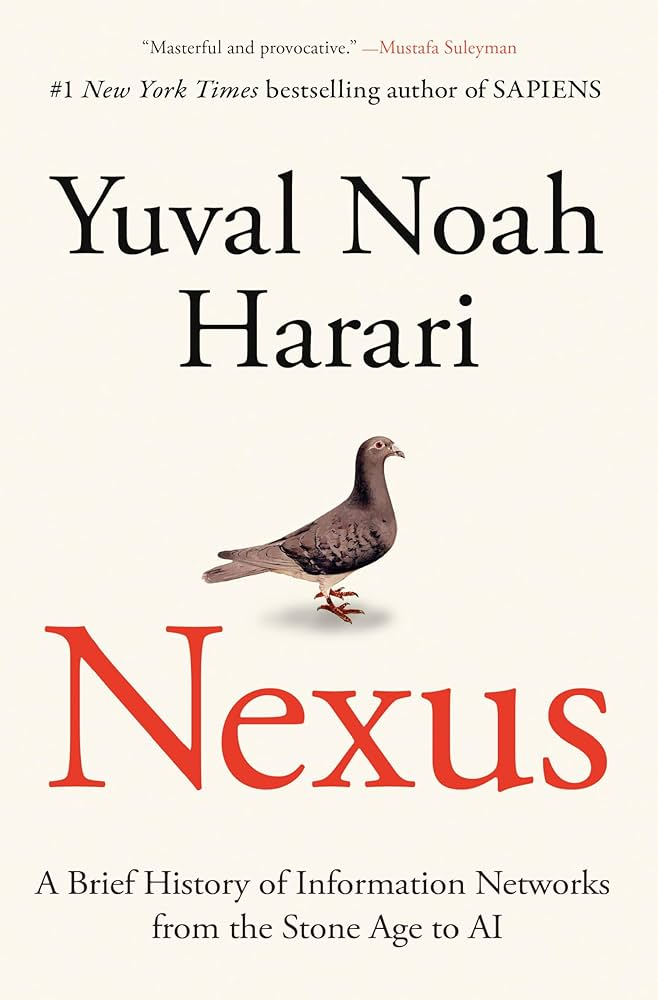

📖《联结》是赫拉利2024年的最新力作，聚焦信息网络如何塑造人类历史。从石器时代的口耳相传，到文字的发明、印刷术的普及，再到今天的互联网与人工智能，信息从来不是中立的力量。
书中揭示，信息的流动方式决定了社会的形态，而每一次信息技术的革新，都会带来权力的重新分配。理解信息网络的历史，才能理解今天的AI革命。
赫拉利延续了简史系列的风格，这次将目光投向信息网络。这本书的核心观点是：信息不是中立的，信息网络塑造了人类社会的形态，每一次信息技术的革命都伴随着权力的转移。
最让我印象深刻的是关于"信息"本质的讨论。我们通常认为信息是客观的、中立的，但赫拉利指出，信息的价值不在于"真实"，而在于"联结"。一个谎言如果能联结足够多的人，就能产生巨大的力量。这解释了为什么在社交媒体时代，假新闻的传播速度往往快于真相。
书中对AI的分析也很深刻。赫拉利认为，AI是第一种能够自主创造新信息的智能体，这意味着人类第一次面对一个自己无法完全控制的"信息源"。AI不是工具，而是能够自主决策的行动者。这种视角让我对AI的理解又深了一层。
作为赫拉利的忠实读者，这本书依然保持了高水准，但相比简史系列的颠覆性，这本书更多是在已有框架下的深化。对于关注AI时代的读者来说，这是理解信息革命的重要读物。